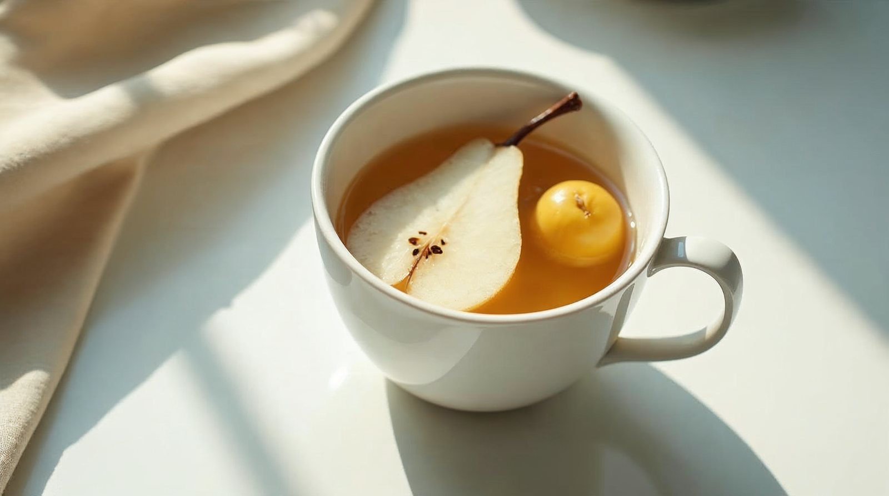
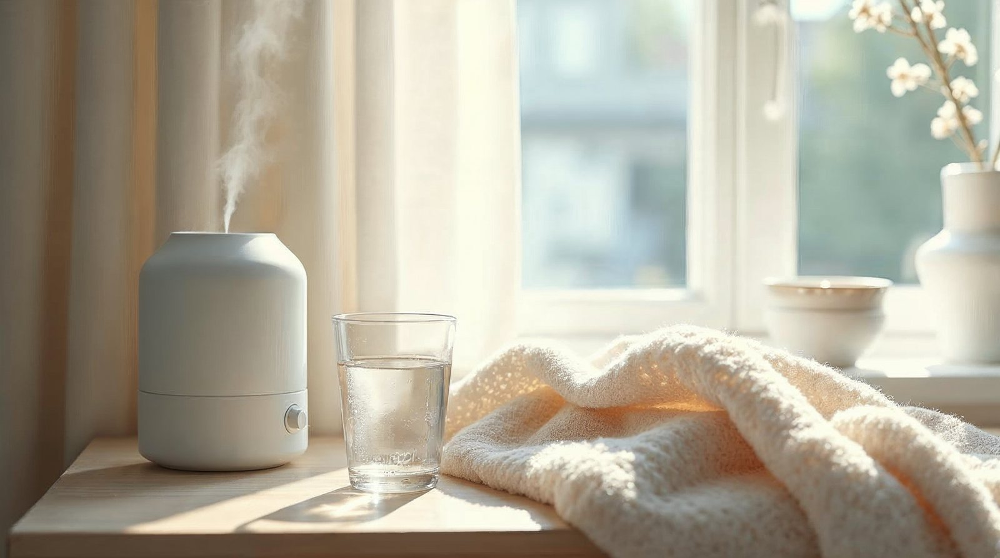
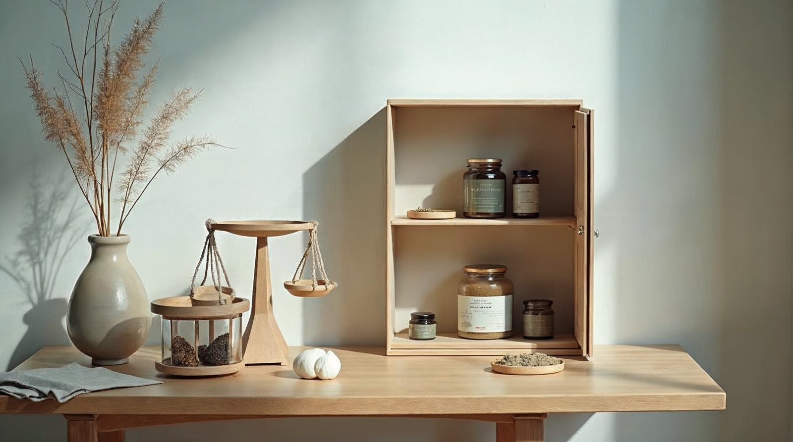

이종호 한의사 감수좋은꿈참사랑한의원 대표원장 (한의사 면허번호 19769)발행 2026-11-26 · 수정 2026-11-26
이 글의 차례
회의 시간에 말을 시작하려는데 목에 뭔가 붙어 있는 것 같아 "흠, 흠" 헛기침부터 하게 됩니다. 물을 마셔도 그대로이고, 침을 삼키면 잠깐 내려가는 듯하다가 다시 올라옵니다. 밥을 먹을 때는 오히려 괜찮은데, 가만히 있을 때 더 신경이 쓰입니다.
이렇게 목이 몇 주, 몇 달씩 칼칼하고 이물감이 이어지는 경우가 있습니다. 목 점막이 오래 자극을 받아 생기는 만성 인후염일 수도 있고, 목에 실제로 걸린 것은 없는데 걸린 듯한 느낌이 계속되는 경우도 있습니다. 한의학에서는 이것을 매실 씨가 걸린 것 같다 하여 매핵기(梅核氣)라고 불러 왔습니다.
진료실에서 이런 말씀을 자주 듣습니다. "혹시 나쁜 게 생긴 건 아닐까 걱정돼서 밤에 자꾸 목을 만져 봐요." 이물감은 아주 작은 감각인데도 마음을 크게 붙잡습니다. 하루에도 몇 번씩 침을 삼켜 확인하게 되니 신경이 쓰이지 않을 수가 없지요.
그 불안을 가볍게 넘기지 않으셨으면 합니다. 걱정이 되면 먼저 이비인후과에서 목 안을 직접 보고 확인받는 것이 마음을 내려놓는 가장 빠른 길이기도 합니다. 그다음 남는 불편을 저는 생활과 몸의 리듬 쪽에서 함께 살펴봅니다.
왜 목이 오래 불편할까요
목, 그러니까 인두는 숨과 음식과 목소리가 모두 지나가는 길목입니다. 그만큼 자극을 받을 일이 많습니다. 건조한 공기, 담배 연기, 큰 목소리, 위로 올라오는 위산, 코에서 넘어오는 콧물이 하루에도 여러 번 이 길목을 건드립니다.
이런 자극이 짧게 지나가면 금방 가라앉지만, 몇 달씩 이어지면 점막이 붉고 건조해지며 예민해집니다. 그러면 작은 자극에도 칼칼함과 헛기침이 생기고, 헛기침이 다시 목을 긁는 일이 반복됩니다.
이물감은 조금 다른 이야기입니다. 목 주변 근육이 긴장하거나 점막이 예민해지면, 실제로 걸린 것이 없어도 뇌가 '무언가 있다'고 느끼는 경우가 있다고 알려져 있습니다. 걱정이 커질수록 자꾸 삼켜 확인하게 되고, 그럴수록 감각은 더 또렷해지기도 합니다.
한의학에서는 매핵기를 마음이 답답하고 기운이 뭉친 상태와 함께 살펴 왔습니다. 하고 싶은 말을 삼키는 날이 많거나 신경 쓸 일이 쌓인 시기에 목이 더 답답해진다는 말씀이 실제로 자주 들립니다. 그래서 저는 목 이야기 끝에 요즘 마음은 어떠신지 조심스럽게 여쭙니다.
원인에 따라 이렇게 나눠 봅니다
목이 불편한 이유는 한 가지가 아니고, 두세 가지가 겹쳐 있는 경우가 많습니다. 어느 쪽이 큰지에 따라 먼저 손볼 곳이 달라집니다.
위산이 올라오는 경우
속쓰림이 뚜렷하지 않아도 위산이 목까지 올라와 점막을 자극하는 경우가 있습니다. 아침에 목이 유독 쓰리거나, 목소리가 잠겨 있거나, 저녁을 늦게 먹은 다음 날 더 불편하다면 이쪽을 의심해 봅니다. 늦은 식사와 과식, 커피와 술이 흔한 계기입니다.
콧물이 목으로 넘어가는 경우
비염이나 축농증이 있으면 콧물이 목 뒤로 넘어가 계속 목을 건드립니다. 아침에 가래 같은 것을 자꾸 뱉어 내거나, 누우면 목이 더 간질간질하다면 코 쪽을 함께 살펴야 합니다.
목을 많이 쓰는 경우
강의나 상담, 전화 응대처럼 하루 종일 말을 하는 분은 목 점막이 쉴 틈이 없습니다. 건조한 사무실 공기까지 더해지면 저녁마다 목이 칼칼해지는 일이 반복됩니다.
긴장과 걱정이 큰 경우
검사에서 특별한 이상이 없다는 말을 들었는데도 이물감이 계속되고, 스트레스가 많은 날 더 심하다면 긴장이 목에 머무는 모습일 수 있습니다. 이때는 목만 보지 않고 잠과 마음의 리듬을 같이 봅니다.

감기 목감기와는 무엇이 다를까요
목감기는 대개 며칠 사이에 목이 따갑게 아프고, 열이나 콧물, 몸살이 함께 오다가 일주일 남짓 지나며 가라앉습니다. 바이러스가 지나가는 동안 생기는 급성 인후염이라고 볼 수 있습니다.
만성 인후염은 결이 다릅니다. 심하게 아프지는 않은데 칼칼함, 건조함, 간질간질함, 헛기침이 몇 달씩 이어집니다. 열은 없고, 좋아졌다 나빠졌다를 되풀이하며 하루 컨디션과 같이 오르내립니다.
편도가 붓고 하얀 고름이 보이며 열이 높게 나는 편도염은 또 다릅니다. 만성 인후염과는 따로 살펴야 하는 경우입니다. 해마다 편도염이 여러 번 반복된다면 그 횟수를 적어 두었다가 진료 때 말씀해 주세요.
매핵기는 아픔보다 '걸린 느낌'이 중심입니다. 음식을 삼킬 때는 오히려 괜찮고, 침만 삼키거나 가만히 있을 때 더 느껴진다는 점이 특징으로 알려져 있습니다. 반대로 음식이 걸린다면 다른 원인을 먼저 확인해야 합니다.
헛기침이 목을 다시 긁는 고리
목이 간질간질하면 저절로 "흠" 하고 헛기침을 하게 됩니다. 잠깐은 시원한데, 그 순간 성대와 목 점막이 세게 부딪히며 다시 자극을 받습니다. 그러면 조금 뒤 또 간질간질해지고, 다시 헛기침을 하게 됩니다.
이 고리가 하루에 수십 번 돌아가면 목은 쉴 틈이 없습니다. 본인은 잘 모르시다가 가족이나 동료에게 "왜 자꾸 목을 가다듬어?"라는 말을 듣고 알아채는 경우도 많습니다.
그래서 저는 헛기침 대신 할 수 있는 작은 행동을 하나 정해 두시라고 권합니다. 침을 한 번 꿀꺽 삼키기, 물 한 모금 마시기, 코로 천천히 숨 한 번 쉬기 같은 것들입니다. 처음에는 어색해도 며칠 지나면 손이 먼저 물컵으로 가는 분들이 많습니다.
예를 들면 이런 경우입니다
실제 어느 분의 사연이 아니라, 진료실에서 자주 보는 모습을 바탕으로 그려 본 장면입니다.
예를 들어 야근 뒤 늦은 저녁을 먹고 바로 잠드는 직장인이 아침마다 목이 쓰리고 잠겨 있다면, 저녁 시간을 앞당기고 베개 쪽을 조금 높여 보는 것부터 이야기합니다. 커피 잔 수도 함께 세어 봅니다.
하루 종일 말을 하는 일을 하는 분이라면, 쉬는 시간마다 물 한 모금을 마시고 목소리를 키우기보다 마이크를 쓰는 방법을 같이 찾습니다. 헛기침 대신 침을 한 번 삼키는 습관으로 바꿔 보시라고도 권합니다.
집안일과 걱정이 겹친 시기에 목이 꽉 막힌 듯하다는 분이라면, 먼저 이비인후과 확인을 받으셨는지 여쭙고, 그다음 잠과 마음 이야기를 천천히 듣습니다. 이야기를 꺼내는 것만으로 숨이 조금 편해졌다는 표정을 보일 때가 있습니다.
"검사에서는 괜찮다는데요"라는 말 뒤에
이비인후과에서 내시경을 보고 큰 이상이 없다는 말을 들으면 한편으로는 안심이 됩니다. 그런데 목에 걸린 느낌은 그대로이니 다른 한편으로는 더 답답해집니다. "그럼 이건 대체 뭔가요?"라는 질문이 남지요.
저는 그 질문을 소중하게 듣습니다. 큰 병이 아니라는 확인은 출발점이지 끝이 아니기 때문입니다. 검사로 보이지 않는 불편, 그러니까 점막의 예민함과 근육의 긴장, 소화와 잠의 흔들림은 이야기를 나누고 진찰하며 하나씩 찾아가야 합니다.
이때 도움이 되는 것은 '언제 덜한가'를 아는 일입니다. 바쁘게 일할 때는 잊고 있다가 혼자 있을 때 심해지는지, 주말에는 덜한지, 식사 뒤에 더한지를 알면 목을 건드리는 것이 무엇인지 윤곽이 잡힙니다.
목이 보내는 신호를 하루 단위로 읽어 봅니다
목의 불편은 하루 안에서도 모양이 바뀝니다. 아침에 일어나자마자 칼칼하다면 밤사이 건조함이나 입 벌리고 자는 습관, 역류를 먼저 떠올립니다. 오후 늦게 심해진다면 하루 동안 쓴 목소리와 사무실 공기를 봅니다.
밤에 누우면 간질간질해 헛기침이 늘어난다면 목 뒤로 넘어가는 콧물을 함께 살핍니다. 이렇게 시간대를 나눠 보면 막연하던 불편이 조금씩 구체적인 이야기로 바뀝니다.
먼저 이렇게 여쭙니다
목이 불편해 오시면 대략 이런 순서로 여쭙니다.
- 언제부터 불편하셨고, 하루 중 언제 가장 심한가요?
- 음식이나 물을 삼킬 때도 걸리거나 아픈가요, 아니면 가만히 있을 때 더 느껴지나요?
- 속쓰림, 신물, 트림, 목소리 잠김이 함께 있나요?
- 코막힘이나 콧물이 목 뒤로 넘어가는 느낌이 있나요?
- 하루에 말을 얼마나 하시고, 흡연이나 음주는 어떤가요?
- 이비인후과에서 목 안을 보신 적이 있나요? 그때 들은 설명은 무엇이었나요?
마지막으로 요즘 잠과 마음은 어떤지 여쭙습니다. 대답하기 어려우시면 넘어가셔도 괜찮습니다.

일상에서 먼저 해 볼 수 있는 것
목은 매일 쓰는 곳이라 생활 속 작은 습관이 그대로 쌓입니다. 아래에서 하나만 골라 2주 정도 이어 가 보세요.
- 미지근한 물을 자주 조금씩 마시고, 실내가 건조하면 가습기나 젖은 수건으로 습도 맞추기
- 헛기침이 나오려 할 때 대신 침을 한 번 삼키거나 물 한 모금 마시기
- 저녁은 잠들기 세 시간 전에 마치고, 먹고 바로 눕지 않기
- 커피·술·매운 음식은 목이 불편한 동안 줄여 보기
- 담배를 피우신다면 이번 기회에 줄이거나 끊는 계획 세우기
- 말을 많이 하는 날에는 중간중간 목소리를 쉬는 시간 넣기
이물감이 신경 쓰일 때마다 침을 삼켜 확인하는 습관이 생겼다면, 그 횟수를 조금씩 줄여 보시는 것도 방법입니다. 확인을 덜 할수록 감각이 덜 또렷해지는 분들이 많습니다. 대신 산책이나 가벼운 스트레칭으로 어깨와 목의 힘을 풀어 보세요.
목과 어깨에 힘이 잔뜩 들어간 채로 하루를 보내는 분이 많습니다. 모니터 앞에서 턱을 앞으로 내민 자세가 길어지면 목 앞쪽 근육도 같이 굳기 쉽습니다. 한 시간에 한 번 어깨를 뒤로 크게 돌리고, 턱을 살짝 당긴 채 천천히 숨을 내쉬어 보세요.
잠들기 전 따뜻한 물로 샤워하며 목덜미를 데우는 것도 좋습니다. 긴장이 풀린 몸으로 잠자리에 들면 다음 날 아침 목이 한결 가볍다는 분들이 계십니다. 무엇이 내 목에 맞는지는 기록을 통해 조금씩 알아 가면 됩니다.
목이 편한 날이 하루라도 있다면 그날을 꼭 적어 두세요. 무엇을 먹었고, 얼마나 말했고, 잠은 어땠는지를요. 불편한 날만큼 편한 날도 많은 것을 알려 줍니다.

한의원에서 함께 살필 수 있는 경우
- 이비인후과 확인에서 큰 이상은 없다는데 이물감과 칼칼함이 계속되는 경우
- 소화가 더부룩하고 트림이 잦으며 목 불편이 함께 있는 경우
- 스트레스가 많은 시기마다 목이 막힌 듯 답답해지는 경우
- 잠이 얕고 피로가 쌓여 목과 몸이 함께 지쳐 있는 경우
좋은꿈참사랑한의원에 처음 오시면 아래 '먼저 확인이 필요한' 신호가 없는지부터 봅니다. 그다음 양손을 올려 달라고 말씀드리고 맥을 짚으며 소화와 잠, 체온, 대소변, 마음의 상태를 여쭙니다.
진찰을 마치면 상태에 맞춰 침 치료나 한약 상담이 필요한지 함께 정합니다. 한약을 상의할 때는 드시는 약을 확인하며 신중하게 정합니다. 목 안을 직접 들여다보는 후두내시경 같은 검사는 이비인후과의 몫이라, 필요하면 그쪽 진료를 먼저 안내합니다.
다시 오시면 지난번 정한 생활 목표 하나가 어땠는지, 이물감이 심했던 날 무슨 일이 있었는지부터 이어서 듣습니다. 목의 불편은 하루아침에 생긴 것이 아니어서, 서두르지 않고 함께 보아 가려 합니다.
목은 하루아침에 예민해지지 않았듯, 편안해지는 데도 시간이 걸립니다. 처음 몇 주는 목의 감각보다 생활 목표를 지켰는지에 눈을 두셨으면 합니다. 물 마시기 하나를 열흘 이어 갔다면 그것만으로도 목을 위해 충분히 애쓰신 겁니다.
이렇게 기록해 오시면 상담이 쉬워집니다
2주만 한 줄씩 적어 보세요.
- 목이 칼칼하거나 이물감이 심했던 날과 시각
- 그날 저녁 식사가 끝난 시각, 커피·술을 마셨는지
- 말을 많이 한 날, 목소리가 잠긴 날
- 코막힘이나 목 뒤로 넘어가는 콧물이 있었던 날
- 신경 쓰이는 일이 많았던 날, 잠을 설친 날
- 이비인후과 진료 기록이나 처방받은 약 이름
목에 걸린 그 작은 느낌 때문에 그동안 얼마나 마음을 졸이셨을까 싶습니다. 확인할 것은 확인하고, 남는 불편은 생활과 몸의 리듬에서 하나씩 풀어 가 보겠습니다. 다음에 오시면 이물감이 가장 심했던 날 무엇이 있었는지부터 여쭙겠습니다.
이런 증상은 먼저 확인이 필요합니다
- 음식이 걸리거나 삼킬 때 아프고, 체중이 빠지거나 목에 혹이 만져지는 경우
- 열이 나며 침도 삼키기 어렵거나 숨쉬기가 힘든 경우
이런 신호가 있으면 한의원보다 가까운 병원이나 응급실을 먼저 찾으세요.
함께 읽으면 좋은 글
- 목 뒤로 콧물이 넘어가서 자꾸 헛기침을 하게 될 때는 어떻게 살피나요?
- 속쓰림과 신물이 오래 갈 때 어떤 점을 살펴보고, 언제 검사를 받아야 하나요?
- 환절기에 목이 건조하고 칼칼할 때는 어떻게 관리하나요?
- 목이 쉬고 목소리가 잘 안 나올 때, 강사·교사는 무엇부터 살피나요?

여쭙는 것
- 언제부터 불편하셨고, 하루 중 언제 가장 심한가요?
- 음식이나 물을 삼킬 때도 걸리거나 아픈가요, 아니면 가만히 있을 때 더 느껴지나요?
- 속쓰림, 신물, 트림, 목소리 잠김이 함께 있나요?
생활에서 해 볼 것
- 미지근한 물을 자주 조금씩 마시고, 실내가 건조하면 가습기나 젖은 수건으로 습도 맞추기
- 헛기침이 나오려 할 때 대신 침을 한 번 삼키거나 물 한 모금 마시기
- 저녁은 잠들기 세 시간 전에 마치고, 먹고 바로 눕지 않기
한의원에서 함께 살필 것
- 이비인후과 확인에서 큰 이상은 없다는데 이물감과 칼칼함이 계속되는 경우
- 소화가 더부룩하고 트림이 잦으며 목 불편이 함께 있는 경우
- 스트레스가 많은 시기마다 목이 막힌 듯 답답해지는 경우
먼저 확인이 필요한 신호
- 음식이 걸리거나 삼킬 때 아프고, 체중이 빠지거나 목에 혹이 만져지는 경우
- 열이 나며 침도 삼키기 어렵거나 숨쉬기가 힘든 경우
한눈에 보는 표
| 구분 | 핵심 |
|---|---|
| 여쭙는 것 | 언제부터 불편하셨고, 하루 중 언제 가장 심한가요? 음식이나 물을 삼킬 때도 걸리거나 아픈가요, 아니면 가만히 있을 때 더 느껴지나요? |
| 생활에서 해 볼 것 | 미지근한 물을 자주 조금씩 마시고, 실내가 건조하면 가습기나 젖은 수건으로 습도 맞추기 헛기침이 나오려 할 때 대신 침을 한 번 삼키거나 물 한 모금 마시기 |
| 한의원에서 함께 살필 것 | 이비인후과 확인에서 큰 이상은 없다는데 이물감과 칼칼함이 계속되는 경우 소화가 더부룩하고 트림이 잦으며 목 불편이 함께 있는 경우 |
| 먼저 확인이 필요한 신호 | 음식이 걸리거나 삼킬 때 아프고, 체중이 빠지거나 목에 혹이 만져지는 경우 열이 나며 침도 삼키기 어렵거나 숨쉬기가 힘든 경우 |
자주 묻는 질문
매핵기는 꾀병이나 기분 탓인가요?
아닙니다. 실제로 느끼는 불편이고, 목 점막의 예민함과 근육 긴장, 역류, 마음의 긴장이 함께 얽혀 생기는 경우가 많습니다. 이비인후과에서 목 안을 한번 보고 나면 마음이 한결 놓이는 분들도 많습니다.
이물감이 하루 중 언제 심한지가 왜 중요한가요?
식사 뒤, 말을 많이 한 뒤, 혼자 있을 때처럼 심해지는 때를 알면 역류·목 사용·긴장 가운데 무엇이 큰지 윤곽이 잡힙니다. 2주만 적어 와 주셔도 상담이 훨씬 구체적이 됩니다.
역류성 식도염 약을 먹고 있는데 한의원 진료를 같이 받아도 되나요?
네. 드시는 약 이름을 알려 주시면 확인한 뒤 상담합니다. 처방받은 약은 처방한 의사와 상의 없이 줄이거나 끊지 않습니다.
목에 좋은 차를 마시면 도움이 되나요?
따뜻한 물이나 순한 차를 자주 조금씩 마시는 것은 목을 촉촉하게 하는 데 도움이 될 수 있습니다. 카페인이 많거나 아주 뜨거운 음료는 오히려 자극이 될 수 있으니 미지근하게 드세요.
좋은꿈참사랑한의원은 재진 때 지난번 이야기부터 이어서 여쭙니다. 진료시간과 예약은 오시는 길에서 확인하세요.
어디서 상담받을 수 있나요?
좋은꿈참사랑한의원은 서울 동작구 만양로2길 2 신성빌딩 3층·5층(서울 동작구 상도동, 7호선 상도역 3번 출구 근처)에 있습니다. 한의사 3명(이종호 대표원장, 조영기 수석진료원장, 정원영 진료원장)이 진료합니다. 진료시간은 평일 09:30~20:00(점심 13:00~14:00), 토·일·공휴일 09:30~15:00이며, 방문 전 전화로 확인을 권합니다. 예약은 네이버 예약, 카카오톡 상담, 전화 02-815-7510로 받습니다.
이 글은 일반적인 건강 정보이며 개인의 진단이나 치료를 대신하지 않습니다. 증상이 있거나 복용 중인 약이 있다면 진료를 통해 확인하세요. 치료 효과는 개인마다 다를 수 있습니다.
작성 기준: 일반적으로 알려져 있는 건강 정보를 참고해 정리했습니다(대표원장 감수). 증상 기록은 1~2주 동안 하루 1회, 비슷한 시간에 적어 오시면 지난 상태와 비교하기 쉽습니다.